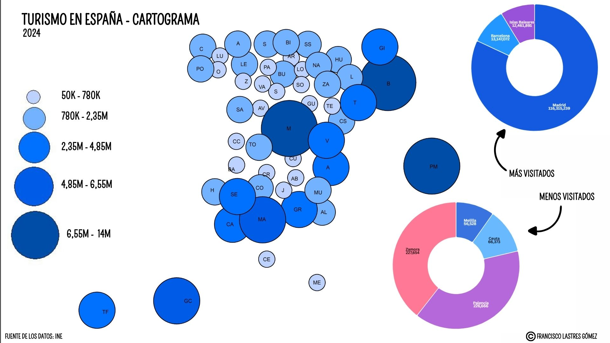
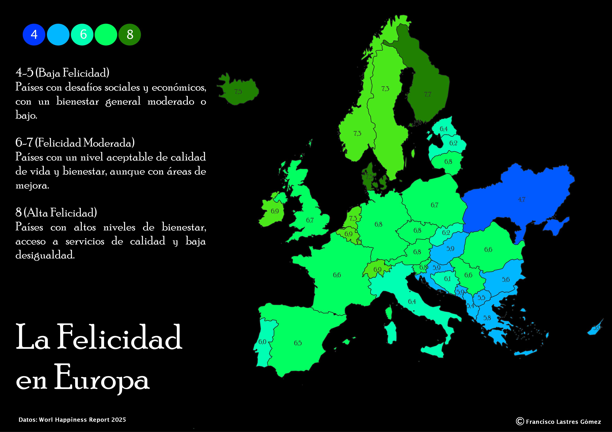
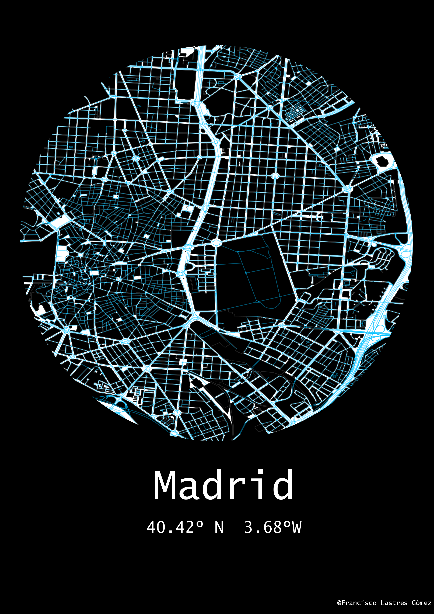
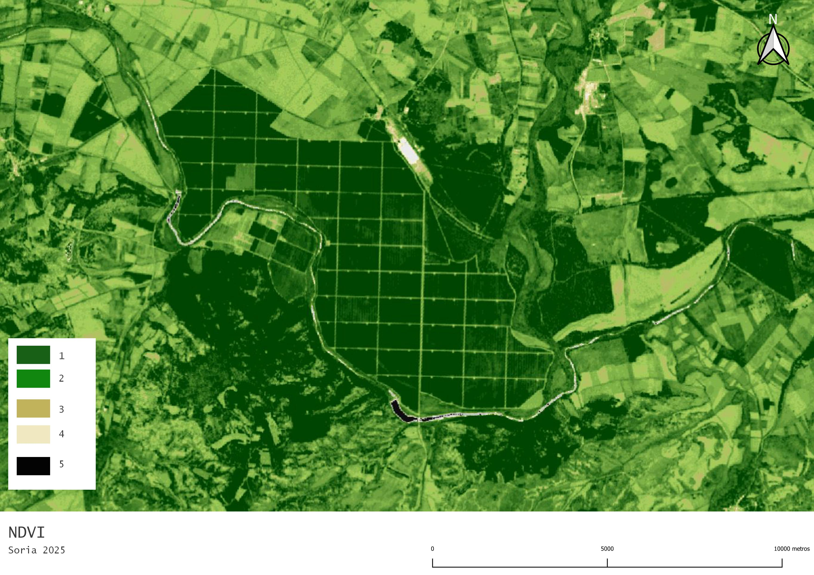

Cartograma que representa el turismo en España por provincia utilizando puntos de mayor o menor tamaño en función de la cantidad de turistas recibidos.
Cartograma Turismo España

Mapa temático del índice de felicidad en países europeos según el World Happiness Report 2025, visualizando diferencias regionales de bienestar en Europa.
Índice de Felicidad en Europa

Visualización de la forma urbana de Madrid con un estilo neón, explorando el potencial del análisis visual para representar patrones de ciudades.
Cartografía estilo neón

Mapa NDVI (Índice de Vegetación de Diferencia Normalizada) de cultivos en una zona de Soria, utilizado para analizar patrones de humedad y vigor de cultivos.
NDVI Cultivos

Mapa de un parque natural con estilo fantasía, creado con simbología en QGIS y elementos gráficos de diseño usados en videojuegos e ilustración web.
Mapa Parque Natural con Estilo Fantasía